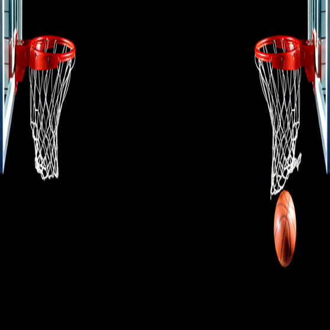

About

Welcome to the about page where you can learn about this website
The history of the NBA page was first founded in 2020 by Gavin Grayson.
Gavin is most interested about basketball and wanted to make a page for it.
He was interested in it so much because he used to play basketball until his.
accident. In 2019 while playing basketball Gavin tore his acl which took him out forever.
More info about the page
This website is monitored and frequently changed by some of Gavin's friends.
most of everyone is gavin's group played or knows a lot about basketball. with all
the help with info that gavin gathers from others he is able to bring you the best website
for basketball known to man
by @Gavin Grayson 2020
Home
Handy links that we do not own:
https://www.espn.com/ , https://www.cbssports.com/